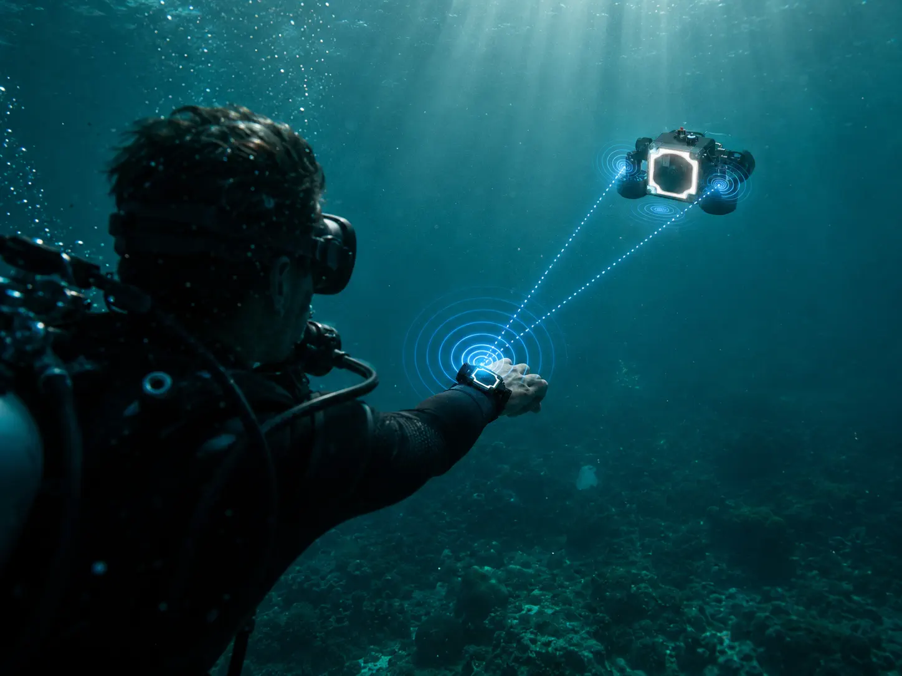
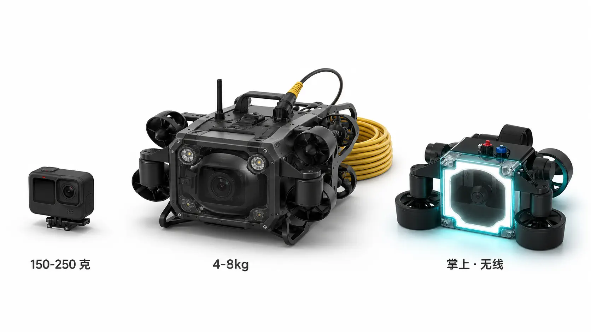

双手自由
不用举着相机潜，专心呼吸专心潜。

动力、声学链路与云端色彩管线正在验证迭代。
通过等候名单和访谈确认真实场景，再进入工程样机迭代。
正式规格、价格与交付时间以发布版公告为准。
既不是手持运动相机，也不是拖线 ROV——Remo 重新定义了消费级水下拍摄。
不用举着相机潜，专心呼吸专心潜。
没有线缆，没有牵绊，你下到哪它跟到哪。
AI 还原水下色彩，目标是出水后快速成片。
HydroLock · 双源融合定位

声学链路 · 20 米直径范围气泡、浑水、低能见度——视觉跟丢的地方，水声依然能到。Remo 用微型水声模组持续接收你腕上的 Beacon 信号，再交给视觉算法精构图，自动游到最佳拍摄位。
你只管潜你的，构图、运镜、跟拍——交给 Remo。
TrueColor Depth · 深度感知 AI 还原
水下 10 米以下，常见相机画面会明显偏蓝偏绿。Remo 把深度、水况和光线元数据回传云端，AI 按真实环境反推应有的色彩，目标是在短时间内生成可分享成片。
← 拖动滑块对比 → · 云端处理时长以发布版为准
TapCode · 水声指令识别
戴着潜水手套？水下看不到屏幕？
Remo 听水声，不用按键。
CloudSync · 云端管线 + App 推送
潜上岸，喝口水，成片已经在你手机上了。

对比基于公开消费产品参数。Remo 数据基于当前工程样机实测与结构设计目标。

留下每一次潜的回忆。不再因为没人帮拍而后悔。

浮潜也能拍出朋友圈大片。不用买装备，不用学拍摄。

一个人也能完成水下 Vlog。不用搭档，不用摄影师。

学员复盘的最佳教学视角。第三视角看自己的姿势。
场景图用于说明目标使用方式。正式发布前将以真实水下拍摄与量产样片更新。
面向浮潜、自由潜与海岛旅行的主力规划款，把操作复杂度降到最低。
面向进阶创作者的规划款，保留更深潜域、更长续航和高级模式空间。
当前产品线为规划方向，最终规格与价格将在 Kickstarter 发布前 更新。加入等候名单可优先收到测试招募、发布节奏和早鸟信息。
Remo 按海水使用场景设计，目标覆盖 IP68、盐雾与长期密封验证。正式量产前会公布完整测试结果；日常使用后仍建议淡水冲洗维护。
水肺一瓶气标准 45–60 分钟，刚好匹配。USB-C 快充约 2 小时回满；进阶用户可购买额外整机作为备机。
当前方案以 20 m 直径声学链路作为跟随范围目标。失锁提醒、自动上浮和定位辅助属于安全策略规划，量产前会按真实水测结果确认。
整机内置锂电池容量 < 100 Wh，符合国际航空"可手提登机"规定。主机可手提登机，无需托运。
消费场景 95% 在 30 m 以内（运动潜 / 浮潜 / 海岛游）。Lite 40 m / Pro 60 m 覆盖了所有休闲与运动潜水深度。100 m+ 是专业洞穴潜与商业潜的需求，不在 Remo 定位内。
当前目标是 2028 Q4 启动 Kickstarter。具体发货时间取决于 EP、PVT 与小批量验证结果，加入等候名单会第一时间收到更新。
维修与保修政策会在 Kickstarter 前公布。当前设计为内置电池，后续会围绕密封维护、电池老化和授权维修建立服务方案。
Kickstarter 全球发货；正式量产后逐步上线 Amazon US / EU / JP。官网 DTC 直发覆盖国家详见上线公告。
等候名单会用于产品验证、访谈招募和发布节奏通知，不代表立即销售。